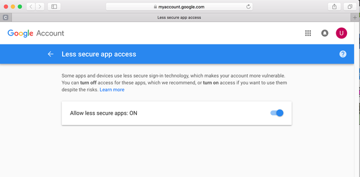
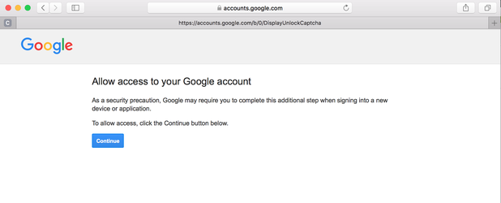
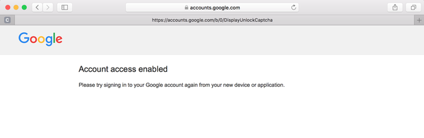
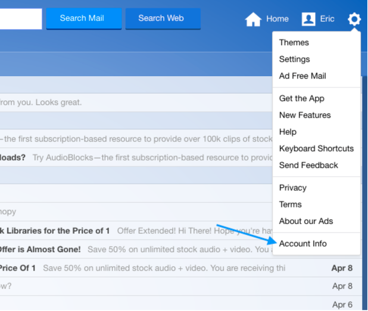
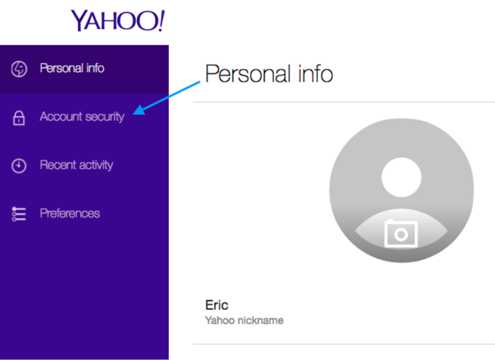
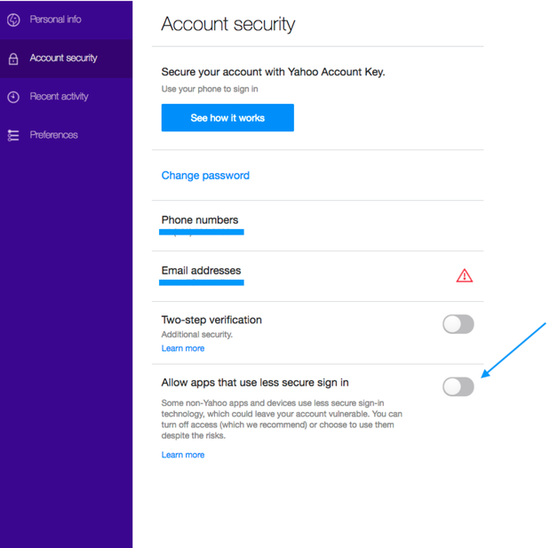
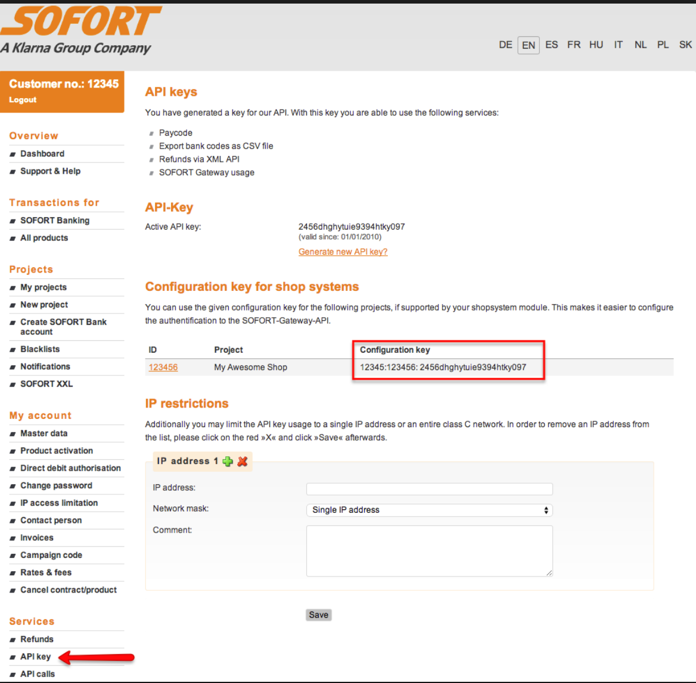

After the page is loaded, click on "Create Account" tab.
Type your email address and password in the corresponding fields. Password should be at least 8-character long and include numbers, upper and lower case characters.
Click "Create Account" button. If the selected password is strong enough, you will be automatically logged in to the application.
To proceed, you have to read and accept "Terms and Conditions". If you are agree with the terms, confirm it by checking the box and clicking on "Accept" button.
Next, select your subscription plan:
You can choose "Free" or "Business" plan.
If you decide to start with "Free" plan, you can always upgrade it to "Business" using "Settings → Subscriptions" menu.
If you decided to start with "Business" plan to have full benefits immediately, the application will ask you to select the number of users and provide credit/debit card information. You will be charged monthly based on your selections.
To confirm your email, click on "Verify Email" button on the top of the page.
"Email verification" pop-up will be displayed; you have to open your email inbox in a new browser tab, copy the confirmation code and paste it into "Verification code" field.
If the confirmation code is correct, you will be promptly notified.
If there is a problem with the confirmation code, you have several login attempts before the code becomes invalid. If you need to regenerate the code, please close the pop-up window and click on "Verify Email" again to receive a new code.
Congratulations! Now you have a verified Textlake account!
Notes: As an alternative, you can create a Textlake account using one of your social media accounts by clicking on "Facebook" or "Google" buttons on the login page.
Click on the arrow next to your email at the top of the main menu (if it is collapsed, click on "Burger" button first).
Click on "Profile" menu item.
On Profile page, you can customize the following settings:
"Language" - Textlake user interface language. Currently, the application supports English, Polish, Russian, and Spanish.
"Display Datetime Format" - defines date display format for the application.
"Input Datetime Format" - defines date input format for the application.
"Status Colors" - please read "How to add colors" for more information.
How to set up a company
Company management requires "Company - Edit" role to be assigned to your account. If you do not have the required role, please first read Matrix of Roles.
To set up a company:
Click on "Settings → Company Profile".
Fill in the fields on Company Profile page; note that all fields from Company Profile page are visible to public and shown on quotes, offers, invoices, emails, etc.
"Preferred Language" - the preferred language for your company. It is used by default for communication with clients unless there is a different preferred language specified by a client.
"Timezone" - the time zone used for displaying date and time information.
"Save" the changes.
Click "Settings → Currencies".
On Currencies page:
Select the primary currency by clicking "Make Primary" button. The primary currency is used by your company for accounting and tax reporting, so choose it thoughtfully. While it is possible to adjust this setting in the future, we highly discourage any changes to keep reporting consistent.
Select all currencies which you plan to accept by checking "Enabled" box and setting exchange rates.
To see exchange rate history, click on "View History" button.
"Save" the changes.
Click "Settings → Taxes".
On Taxes page:
Click "Add" button to create a new entry which will be displayed on Offers page. For example, Tax Name = "Poland 23%" and Rate = "23.0000".
You can have multiple tax entries per company.
"Save" the changes.
How to add a service
Service management requires "Service - Edit" role to be assigned to your account. If you do not have the required role, please first read Matrix of Roles.
To add a service:
Click on "Settings → Services" tab.
Click on "Create" button.
Fill the following fields:
Name - name of the service as you want is to be seen by clients.
Short name - alternative name of the service for internal use.
Direction - direction of the translation (for example, English to Spanish).
Price - per unit cost of the service (in primary currency) to be paid by a client.
Rate - the default rate is "Basic"; to add custom rates, please read #13.
Unit - work measurement unit (for example - page, 1800 chars, 1 hour, etc.).
Click "Save" to accept the changes.
To clone an existing service:
Click "Settings → Services".
Select one or many services to be cloned by checking the box next to the service name. Note that only services under "Basic" rate can be cloned.
Click "Clone" button at the bottom of the page.
You will see a list of services to be cloned. Select the required custom rate for each service and then click "OK" to apply the changes.
To delete a service:
Click "Settings → Services".
Click "Delete" button next to the service to be deleted. Note that only services with custom rates can be deleted.
How to create an offer
Offer management requires "Offer - Edit" role to be assigned to your account. If you do not have the required role, please first read Matrix of Roles.
An offer can be created in two different ways - from scratch or based on an email.
To create an offer from scratch:
Click "Offers" tab.
Click "Create" button to see a blank offer.
Next, you have to select the existing client or create a new client record:
On "Details" tab under "Client & Contact" section, click "Find" button and see the client selection menu.
Type the name of a client to see potential matches.
If an existing client is found, click on the client's name and press "Select" button.
If there is no matching record, click "Create" and "OK" buttons to create a new one.
Fill out "Person", "Email", "Phone", and "Fax" fields with contact information.
Add required information into "Miscellaneous", "Delivery", and "Translation" sections.
Select "Currency" and "Tax" applicable to the client at the bottom of the page.
Click "Add Service" button to add services requested by the client.
On "Services" page, select one or more services. Please use filters to narrow down search results.
Check the service(s) required and click "Update" button.
You should see a list of services displayed on "Details" tab. For each service, update the following fields:
Units - defines the volume of work to be done as requested by the client.
Billable Units - defines the volume of work to be billed to the client.
Ratio and Discount - provides additional adjustments for billing.
Billable - detects whether the service is visible and billable to the client./li>
Click on "Document" tab to add documents to be translated.
Click on "Documents" section or drag and drop files directly into this section.
As soon as the files are uploaded, you will be able to add public and private comments to each document.
Next step is to assign documents with services.
Click on "Details" tab.
Each service has "Select documents" menu. Click on it and select the document/s to be associated./li>
On "Shipping" tab, fill out shipping information optional).
Click "Save" to create an offer.
To create an offer from an email:
Click "Mailbox" and select required email. If no mailboxes is available, please first read How to attach a mailbox.
Click "Create new offer" button at the top of the list.
If the email has attachments, you will be prompted to select the attachment/s to be uploaded.
After the attachments are selected, click "Create Offer" button.
Next steps are similar to the guide above except the documents are added automatically, and contact information is filled in for existing clients.
How to add a client
Client management requires "Offer - Edit" role to be assigned to your account. If you do not have the required role, please first read Matrix of Roles.
Select "Preferred Language" if it is different from your company's preferred language. This selection will be used for all your communication with the client.
Fill in other required information.
On "Billing" tab, fill in the client's financial information if available.
Click "Save".
New tabs will be displayed:
Contacts - directory of contacts on the client's side
To create a new contact, click "Add contact" button.
Fill in the requested information.
Check "Make primary" if you want to make a contact primary - it will be automatically selected for every new offer for the client. Only one contact can be primary.
Check "Inactive" if you want to mark a contact as inactive.
Click "All" button to see all transactions made by the client.
Click "Credit" button to see all credit translations made by the client.
Click "Debit" button to see all debit translations made by the client.
Click "Create Transaction" and populate "Amount", "Currency", and "Comment" fields to adjust the client's balance. Click "OK" to create the transaction.
Advanced - allows deletion and restoration of a client.
Click "Delete Client" button to delete a client. The client will be instantly marked as deleted.
Click "Restore Client" button to restore a client. The client will be instantly restored.
Check "Show deleted clients" and click "Search" button to see deleted clients on client list ("Clients" menu).
Click "Save" to apply the changes.
How to add a translator
Translator management requires "Translator - Edit" role to be assigned to your account. If you do not have the required role, please first read Matrix of Roles.
To add a translator:
Click on "Translators" tab.
Click on "Add" button.
On "General" tab:
Fill in "First Name" and "Last Name" or "Legal Name" of the translator.
Provide other required information.
Make sure that "Active" checkbox is enabled.
On "Financial" tab, add the information required for tax reporting purposes.
On "Services" tab:
Click "Add Service" button.
Select "Company Service" which will be the default translator's service. You can use "Filter Service" to narrow the list down. If you do not see any company services, please read How to add a service.
Add one or many areas of the translator's proficiency in "Subject Area".
Select "Translation type".
Provide "Price" and "Currency" per unit of work to be paid to the translator.
Check "Notary" if the translator is offering notarizing services.
Check "Extra Service" if the service is not performed by the translator on a regular basis but he/she is willing to help with it sometimes.
Click "OK".
Repeat the steps to add more services.
Click "Save" to apply the changes.
How to create a quote
To create a quote manually:
Open an offer.
Click "Show quote" button to see the quote preview page.
Click "Copy" button to copy the quote.
Open your preferred email client, create a new email or reply to an existing thread, and paste the quote.
To create a quote automatically:
Open an offer.
Click "Save & Send" button.
On "Send a quote" pop-up screen, add all the required information and click "Save & Send" button again.
If you see an error message saying that your email is not verified, please click the link and open your preferred email client. Once you receive an email from Amazon Web Services, please click on the link received. This verification step is required by AWS to prevent fraud and email forging.
The quote has been sent to your client.
How to add a mailbox
Mailbox management requires "Mailbox - Edit" role to be assigned to your account. If you do not have the required role, please first read Matrix of Roles.
To add a new mailbox:
Click "Settings → Mailboxes".
Click "Create" button.
Add "Email" address to be used.
Add "Password" for the above email address - it will be encrypted and securely stored.
Add "Host" and "Port" of your email server.
The most common parameters are:
Gmail - HOST imap.gmail.com, PORT 993, SSL true
Yahoo - HOST imap.mail.yahoo.com, PORT 993, SSL true
AOL - HOST imap.aol.com, PORT 993, SSL true
MSN - HOST imap-mail.outlook.com, PORT 993, SSL true
Office 365 - HOST outlook.office365.com, PORT 993, SSL true
Outlook.com - HOST imap-mail.outlook.com, PORT 993, SSL true
Hotmail.com - HOST imap-mail.outlook.com, PORT 993, SSL true
Live.com - HOST imap-mail.outlook.com, PORT 993, SSL true
Yahoo! - HOST imap.mail.yahoo.com, PORT 993, SSL true
If you are using a custom email server, please contact your system administrator.
Keep "Protocol" as IMAP.
Select whether a secured connection should be used during communication with your email server.
Click "Test" button to verify the connection.
If the test is successful, click "Save" button to apply the changes.
NOTE: Some users reported that occasionally they were unable to establish successful connection despite the correct credentials were provided. It is a know issue with major email providers such as Gmail, Yahoo, etc. The providers consider IMAP protocol usage is less secure than OAuth 2.0 authentication flow. We are planning to add support of OAuth 2.0 in the future but if you experienced similar problem please let us know as soon as possible - it will help us prioritize development of new features.
Meanwhile to solve connectivity problem please do the following steps:
You can now connect your Gmail account to Textlake.



YAHOO!
Log into Yahoo go to "Settings → Account Info".
Then go to the "Account security" section and enter your username and password.
Once you’re in the Account security section activate the "Allow apps that use less secure sign in".
You can now connect your Yahoo Mail account to Textlake.



How to invite a new user
User management requires "Company - Edit" role to be assigned to your account. If you do not have the required role, please first read Matrix of Roles.
To invite a new user:
Click "Settings → Invitations" tab.
Click "Add" button.
Provide "Email" of the user to be invited.
Select "Roles" to be assigned to the user.
Click "Save" to apply the changes.
Ask user to go to https://tsm.textlake.com and create an account using the email provided on the step #3.
If the user already has an account, please ask user to:
Open "Profile" (click on the arrow next to email address field at the top left part of the screen).
Select your company from "Switch Account" drop down menu.
Click "Switch" button.
How to create a project
Project management requires "Project - Edit" role to be assigned to your account. If you do not have the required role, please first read Matrix of Roles.
Open the offer accepted by your client.
Click "Create Project" button.
If you have "Project Coordinator - Edit" role, a pop-up window will suggest choosing a coordinator who will be assigned to the project. Please select one or keep it unassigned.
Click "OK" to confirm the selection.
After a new project is created, you will be redirected to the project screen.
On "Details" tab, set "Deadline" for the project by clicking on calendar button.
Next, for each service assign a translator responsible for the project deliverable/s.
Translators can be assigned by clicking on "Assign translator to service" button (if one person is handling the entire service) or by clicking on "Assign translator to attachment" (if one person is assigned to a specific document).
"Add Assignment" screen will be displayed.
Fill in the required fields:
"Begin" - indication of where the assignment starts (for example, page 5).
"End" - indication of where the assignment ends (for example, page 10).
"Units" - number of work units to be completed.
"Deadline" - the date when the assignment has to be completed.
"Accepted" - the date when the assignment has been accepted by the translator.
"Comment" - any additional comments.
"Reclaimed amount" - amount to be reclaimed from the translator if the quality requirements are not satisfied.
"Reclamation comment" - reasons for the reclamation.
Select a translator from the list below and click "OK". If you do not see any translators, please read #8.
Repeat the steps if necessary.
Click "Save" to apply changes.
When the final version of the translated document is provided by the translator, click on "Upload" button and select the document to attach. You will be able to download it any time later by clicking on "Download" button.
How to use custom rates
User management requires "Company - Edit" and "Offer - Edit" roles to be assigned to your account. If you do not have the required role, please first read Matrix of Roles.
To add a custom rate:
Click "Settings → Rates".
Click "Add" button.
Provide the following values:
Name - name of the rate.
Description - description of the rate for internal use.
Enabled - check if the rate is active.
Global - check if the rate is applicable to all clients.
Click "Save" to apply the changes.
Click "Clients" on the left hand side menu.
Select the client you would like to assign the rate to.
Click on "Rates" tab.
The list of all active rates will be displayed. The global rates will be checked by default.
Check the rate you would like to assign.
Click "Save".
How to collect payments online
User management requires "Company - Edit" role to be assigned to your account. If you do not have the required role, please first read Matrix of Roles.
Click "Settings → Payment Providers".
On the payment providers screen, click on tab representing the provider you would like to use.
"Stripe" tab:
Click on "Connect with Stripe" button.
If you already have a Stripe account, click on "Already have a Stripe account? Sign in" link and login with your credentials.
If you do not have a Stripe account, then fill in the form and click "Authorize access to this account" button.
After successful sign-in or sing-up, you will be redirected back to Stripe configuration page.
Check "Enabled" to enable the provider.
Click "Save" to apply the changes.
SOFORT tab (available for Business subscription only).
Add API Key, Customer ID, and Project ID values received from your SOFORT account. (Image below shows an example how to get API Key).
Check "Enabled" to enable the provider.
Click "Save" to apply the changes.
Next time you send a quote to a client by clicking on "Save and Send" button on Offer page, your client will be able to pay online from the email or PDF file received.

How to update your subscription
Subscription management requires "Subscription - Edit" role to be assigned to your account. If you do not have the required role, please first read Matrix of Roles.
To update your subscription:
Click "Settings → Subscriptions".
Click "Change" button next to the Plan name."Change Plan" page will be displayed.
Select the required plan and click on "Choose" button.
Select the number of active users you would like to have.
Fill in card holder name, card number (16 digits), expiration date, CVV, and ZIP code (optional for debit cards). The provided card will be charged every month with the amount displayed.
Click "Submit" to confirm the selections.
To update the number of active users:
Click "Settings → Subscriptions".
Click "Change" button next to Users number.
Select new number and click "Save" button.
Confirm your active status by clicking "OK" button.
If you have a paid plan, the new monthly amount will be displayed below the funding source.
To update debit/credit card:
Click "Settings → Subscriptions".
Click "Change" button next to Funding Source.
Fill in new card information - card holder name, card number (16 digits), expiration date, CVV, and ZIP code (optional for debit cards).
Click "Submit" to confirm the changes.
How to view reports
Company management requires "Project - Edit" role to be assigned to your account. If you do not have the required role, please first read Matrix of Roles.
To view reports:
Click "Reports" on the left menu and select a report.
"Translators" - summary of work grouped by translator.
Set up your filters by entering:
Translator name - (optional) name of the translator.
Project - (optional) project id.
Project status - current project status. Pick "Any" to skip filtering by status.
Project created since - projects created after this date.
Project completed before - projects completed before this date. To be completed, a project has to have Closed or Canceled status.
Comment - (optional) full or partial comment from the statement record.
Click "Search".
The report by translator will be displayed.
Project - project id.
Status - project status.
Amount - amount to be paid to the translator in the primary currency.
Payment Id - unique id created when a payment is made.
Paid check box - indicates if the payment has been made.
Comment - comment related to the payment.
If any change is made to the report, click "Save" button at the bottom of the page.
"Projects" - summary of work grouped by project. The workflow is the same as for Translators report (see step #2).
"Coordinators" - summary of work grouped by coordinator.
Set up your filters by entering:
Coordinator - name of the coordinator.
Offer Created Since - offers created after this date.
Offer Created Before - offers created before this date.
Project Created Since - projects created after this date.
Project Created Before - projects created before this date.
Project Completed Since - projects finished after this date. To be completed, a project has to have Closed or Canceled status.
ProjectCompleted Before - projects finished before this date. To be completed, a project has to have Closed or Canceled status.
Project status - current project status. Pick "Any" to skip filtering by status.
Offer status - current offer status. Pick "Any" to skip filtering by status.
Click "Search".
The report by coordinator will be displayed. Total Gross and Total Net are the amounts in the primary currency calculated based on filter values.
"Clients" - summary of work grouped by client
Set up your filters by entering:
Name - (optional) name of the client
Project status - current project status. Pick "Any" to skip filtering by status.
Project Created Since - (optional) projects created after this date.
Project Created Before - (optional) projects created before this date.
Project Completed Since - (optional) projects finished after this date. To be completed, a project has to have Closed or Canceled status.
ProjectCompleted Before - projects finished before this date. To be completed, a project has to have Closed or Canceled status.
Offer/Project - (optional) offer or project id.
Invoiced - (optional) indicates if the invoice has been sent to the client.
Click "Search".
The report by client will be displayed.
You can click on the arrow to display client information.
Comment - editable comment related to the payment.
Invoice - invoice number.
Send - indicates if the invoice has been sent to the client.
If any change is made to the report, click "Save" button at the bottom of the page.
How to add colors
Textlake application supports color customization for Offer, Project, and Translator records.
Offers and Projects
Click on the arrow next to your email at the top of the main menu (if it is collapsed, click on "Burger" button first).
Click on "Profile" menu item.
On Profile page,click on a rectangle next to offer status name.
Pick the desired color from the color picker.
Click "Save" to apply the changes.
Now if you click on Offers or Projects menu, the rows will be highlighted with the selected colors.
Translators
Make sure that "Translator - Edit" role is assigned to your account.
Click "Translators" menu.
Click "Edit" button next to the translator.
On "General" tab, click on a rectangle with a label "Color".
Pick the desired color from 20 options available.
Click "Save" to apply the changes. The new color will be visible by all company users.
Matrix of Roles
Role management requires "Role - Edit" role to be assigned to your account. If you do not have the required role, please contact your Administrator.
Click "Settings → Roles".
Click on a user you would like to update.
Click on a role from "Available Roles" column to assign a role to the user.
Click on a role from "Roles Assigned" column to remove a role from the user.
Role Name
Description
Used by
Company - Edit
Grants permission to update company configuration, such as profile, taxes, rates, and invitations.